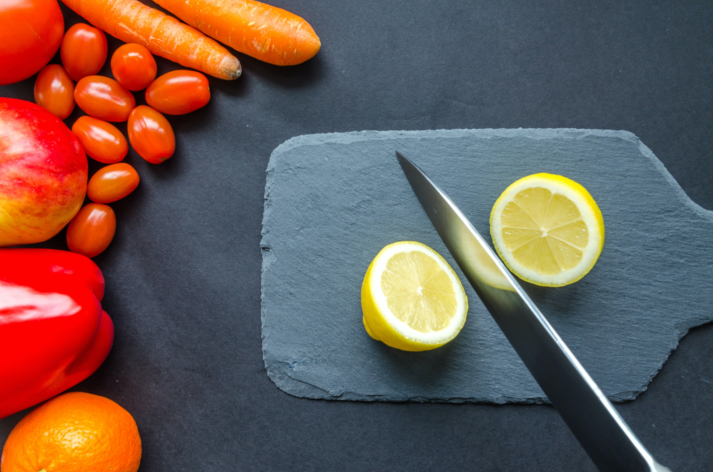

Hello
Benefits of Mixed Vegetables
Vegetables are an important part of a healthy diet. When you eat them,
variety is just as important as the quantity you eat. This is because no
single vegetable provides all the health benefits you need. However, eating
a variety of vegetables gives you access to different health benefits and
nutrients. So, you must eat as many different vegetables as you can every day!
I think mixed vegetables can help you eat a variety of vegetables, in one meal.
And this can help improve your health quickly
Hello
Homemade Beef Burgers Recipe
Tip 500g beef mince into a bowl with 1 small diced onion and 1 egg, then mix.
Divide the mixture into four. Lightly wet your hands. Carefully roll the mixture
into balls, each about the size of a tennis ball.
Set in the palm of your hand and gently squeeze down to flatten into patties about
3cm thick. Make sure all the burgers are the same thickness so that they will cook evenly.
Put on a plate, cover with cling film and leave in the fridge to firm up for at least 30 mins
Hello
How to Make Pizza
Step:1,
Take a dough kneading plate and add all-purpose flour to it. Next, add salt and baking powder in it and sieve
the flour once. Then, make a well in the centre and add 1 teaspoon of oil to it. On the other hand, take a
little warm water and mix the yeast in it along with 1 teaspoon of sugar
Step:2,
Preheat the oven at 180 degree Celsius. Now, is the time to make the pizza base when the dough is ready. Dust the
space a little using dry flour and take a large amount of the pizza dough. Using a rolling pin, roll this dough into
a nice circular base
Step:3,
Now, wash the capsicum and slice it thinly in a bowl. Then, peel the onions and cut thin slices of it as well in another
bowl. And finally, cut tomatoes and mushrooms in the same manner.

Hello
Benefits of Lemon Water
A glass of lemon water containing one 48 gram lemon, squeezed, contains:Trusted Source
10.6 calories
18.6 milligrams (mg) of vitamin C, or 21% of the Daily value (DV)
9.6 micrograms (mcg) of folate, or 2% of the DV
49.4 mg of potassium, or 1% of the DV
0.038 mg of iron, or < 1% of the DV
0.01 mg of vitamin B-1, or 1% of the DV
0.01 mg of vitamin B-2, or 1% of the DV
0.06 mg of vitamin B-5, or 1% of the DV